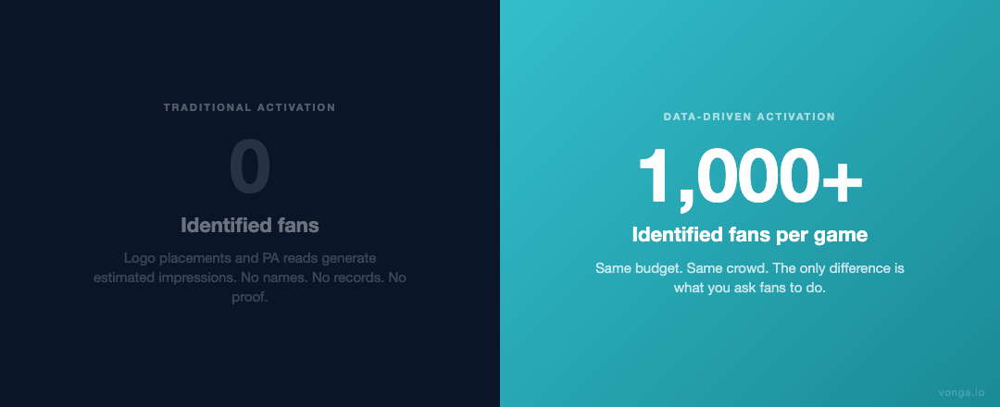
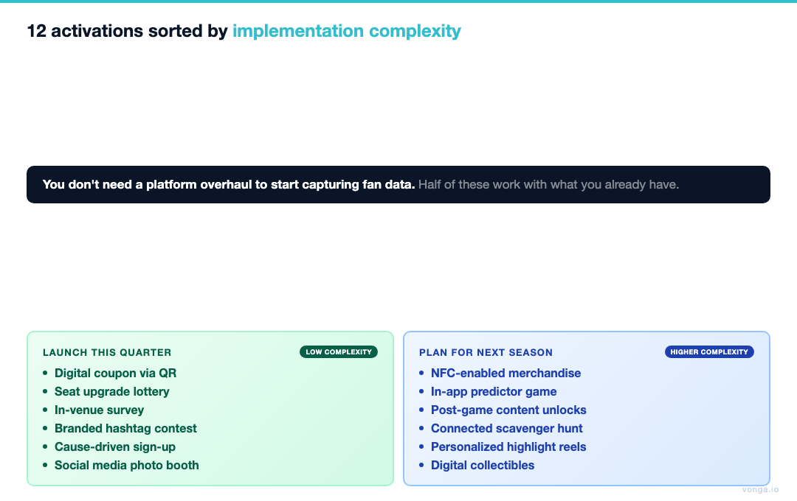
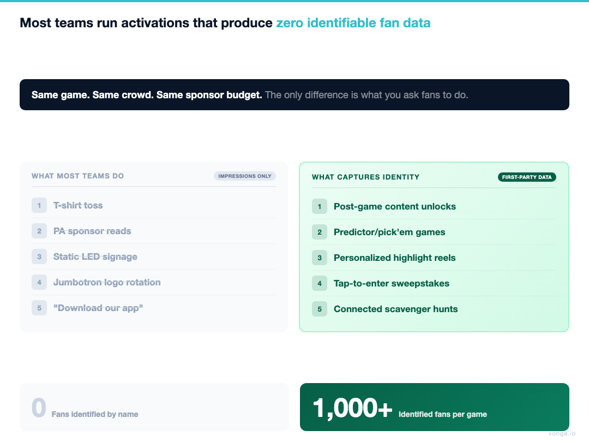
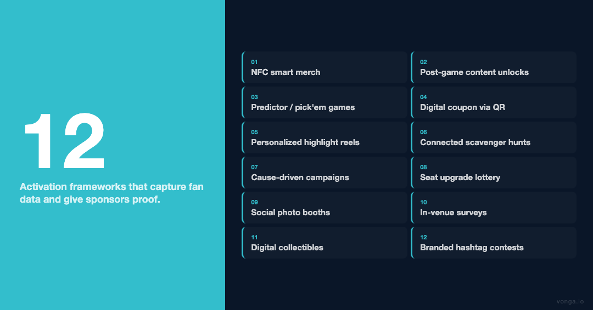

Executive Summary
The era of passive logo placement is over. As BCG noted in their February 2026 report Beyond Media Rights, "winning leagues and teams will be defined by how quickly they can build direct fan relationships and adopt new forms of engagement." For partnership directors, that mandate is specific: activations must generate identifiable leads, attributable engagement, and real-time ROI data. Impression estimates are no longer sufficient.
This guide presents 12 activation frameworks designed for sports organizations that want to retain sponsors, command premium pricing, and build the kind of fan data infrastructure that modern brands will pay for. Every idea below includes a data capture mechanism, a sponsor value proposition, and a clear proof-of-performance structure.

The Activation Gap: Why "Logo Plus PA Read" No Longer Closes
Most sponsorship packages still default to three assets: jersey logo, jumbotron rotation, and a PA read. Brands have learned to tolerate these placements, but they no longer close renewal conversations on their own.
The core problem is attribution. A logo on the jumbotron generates an estimated impression. An interactive activation generates an identified fan. These are not comparable assets, and increasingly, sophisticated brand partners know the difference.
"Sponsors don't want reach estimates. They want a list of people who raised their hand."
Common refrain from brand partnership directors at regional and national accounts
Teams that solve the attribution problem, knowing their fans by name rather than by headcount, are building the sponsorship inventory of the next decade. The 12 ideas below are tools for building that inventory.
12 Sponsorship Activation Ideas That Go Beyond Logo Placement
1. Turn Merchandise Into a Data Channel
The Opportunity: Traditional merchandise giveaways such as t-shirt cannons, rally towels, and promo hats are sunk costs with no measurable return. NFC-enabled premium apparel converts that cost into a revenue-generating, data-capturing asset.
How It Works: A sponsor underwrites a connected item (hat, jersey, scarf). When a fan taps the item with their phone, they unlock exclusive sponsor content: a discount code, a behind-the-scenes video, or a VIP contest entry. No app download required. The tap itself captures the fan's device data and prompts a minimal opt-in.
Sponsor Value Proposition: Instead of "5,000 items distributed," the sponsor receives a list of opted-in, identified leads with timestamps and engagement data. The conversation shifts from impressions to leads.
Why It Works: This is the clearest example of turning merchandise into a data channel. The physical item becomes a persistent engagement touchpoint, not a one-time branded moment.
2. The Smart Seat Upgrade Program
The Opportunity: Seat upgrade promotions are proven engagement drivers, but they typically waste their data potential: entry happens at a kiosk or by hand, and the winner's information disappears.
How It Works: Sponsors own a premium seat block for the season. Fans enter for upgrades via a sponsor-branded landing page triggered by a QR code on the concourse or jumbotron. Every entry, not just the winner, is captured as an engaged, identified fan record.
Sponsor Value Proposition: A targeted list of highly engaged fans who self-selected into the sponsor's ecosystem, plus a premium, visible brand moment for the winner.
Key Data Point: Because entry requires minimal friction (name, email, opt-in) and the payoff is tangible (premium seats), conversion rates on this format outperform generic digital sweepstakes.
3. Immersive Fantasy Sport Lounges
The Opportunity: Fantasy sports participation drives sustained in-game attention. Teams that leverage this engagement pattern, rather than fight it, create a natural sponsor integration point.
How It Works: A sponsor hosts an exclusive in-arena fantasy lounge: premium seating, live stat feeds, dedicated service. Access requires a sponsor product registration or service sign-up. The lounge experience justifies the data exchange.
Sponsor Value Proposition: Direct lead generation tied to product trial or sign-up, not merely brand exposure. This is a high-intent audience.
Comparable Executions: Premium club spaces operated by the Golden State Warriors and Miami Heat have demonstrated the fan appetite for elevated in-arena environments. The sponsor-gated version turns that preference into a direct commercial outcome.
4. Post-Game Unlockable Content: Extending the Fan Relationship Past the Final Buzzer
The Opportunity: The final buzzer ends the game, not the fan relationship. Teams that own the post-game window can offer sponsors a high-attention, low-competition moment.
How It Works: Fans who attended the game receive a post-game email or SMS with access to exclusive sponsor-branded content: locker room audio, player interviews, and behind-the-scenes footage. To unlock, fans verify attendance and provide basic opt-in information via a sponsor landing page.
Sponsor Value Proposition: Quantifiable post-event engagement: open rates, click-throughs, and lead capture all directly tied to a specific sponsorship spend. This is proof, not promises.
Note: This format works particularly well for team sports with high post-game media interest (playoff runs, rivalry games).
5. VIP Arrival Experiences With Pre-Event Data Capture
The Opportunity: The fan's journey begins before they enter the arena. The arrival moment, historically dominated by parking and traffic logistics, is an underutilized brand touchpoint.
How It Works: An automotive, rideshare, or financial services brand sponsors a VIP arrival lane: dedicated drop-off, express entry, premium parking. Fans register online in advance, exchanging basic information for access.
Sponsor Value Proposition: Pre-event engagement data, a premium brand association with the fan's first impression of game day, and a defined audience segment (fans willing to plan ahead and register).
6. The Connected Concourse Scavenger Hunt
The Opportunity: Concourse dwell time, both before the game and during intermissions, is unmonetized attention. Structured activation converts idle fans into engaged, moving participants.
How It Works: Sponsors place branded checkpoints across the concourse. Fans check in via QR code or NFC tap at each location, collecting digital stamps toward a prize. Completion drives both brand exposure depth and a rich data profile that includes fan movement patterns and dwell locations.
Sponsor Value Proposition: Multiple touchpoints per fan (not a single impression), heat map data on arena traffic, and a completion-gated data capture at the prize claim stage.

7. In-Game Predictor and Polling Activations
The Opportunity: Real-time prediction games are among the highest-engagement formats in sports media. In-arena versions can match that engagement while adding physical presence and atmosphere.
How It Works: Sponsors present "Predict the Next Play" or "Guess the Score at Half" games via jumbotron, directing fans to a mobile web form (no app required). Registration takes under 30 seconds. Correct predictions win sponsor-branded prizes.
Sponsor Value Proposition: Mass simultaneous data capture across the entire arena during peak attention moments (media timeouts, TV breaks). Engagement is active, not passive.
8. Sponsor-Hosted Tailgate Takeovers
The Opportunity: For NFL and college football markets, the tailgate is a two-to-four-hour engagement window that most sponsors ignore. It is also the moment fans are most socially open and brand-receptive.
How It Works: A sponsor hosts a structured tailgate activation such as a skills competition, premium tasting, or branded setup contest. RSVP or check-in is required for participation, creating a structured data capture in an otherwise chaotic environment.
Sponsor Value Proposition: High dwell time, social sharing potential, and a pre-game data set of engaged fans collected before the sponsor even needs to buy in-arena inventory.
9. Fan-Voted "Fan of the Game" With Sponsor Presentation
The Opportunity: The traditional "Fan of the Game" is a passive camera moment that benefits one fan and one sponsor for approximately 30 seconds. A participatory version scales both the data and the engagement.
How It Works: Fans vote for the Fan of the Game via their mobile device, entering their information for a chance to win a companion prize alongside the winning fan. The vote itself is the data collection event.
Sponsor Value Proposition: Arena-wide participation in a sponsor-branded moment. The number of votes is a trackable, reportable engagement metric, far more meaningful than a jumbotron impression.
10. Sponsor-Branded Digital Collectibles With Utility Value
The Opportunity: Digital collectibles have matured beyond speculative hype into utility-driven engagement tools. Teams that deploy them correctly create persistent, off-season fan relationships.
How It Works: A sponsor offers a limited digital collectible, claimable by attending fans, that functions as a redeemable voucher: future event access, product discount, or VIP drawing entry. Claiming the collectible requires a fan account registration.
Sponsor Value Proposition: Fans who claim the collectible enter the sponsor's ecosystem voluntarily and persistently. This is a long-cycle engagement model, not a one-game impression.
11. Cause-Driven Activations With Measurable Participation
The Opportunity: Purpose-driven marketing is disproportionately effective with Gen Z and Millennial fans, the demographic most sponsors are trying hardest to reach. (Deloitte's 2023 Sports Fan Insights survey found that 60% of Gen Z fans said they were more of a fan today than three years ago, and this younger cohort is especially responsive to brands that show up with purpose, not just logos.)
How It Works: A sponsor pledges a per-participation donation, triggered by newsletter sign-ups, in-arena check-ins, or app registrations during the game. A live progress meter on the jumbotron drives social pressure and participation momentum.
Sponsor Value Proposition: High opt-in rates (cause alignment lowers friction), positive brand sentiment data, and a highly engaged audience segment.
12. Personalized Post-Game Highlight Reels Delivered by Sponsors
The Opportunity: Personalized content outperforms generic content by a significant margin. A post-game highlight reel curated for the individual fan, based on their seat location, team preferences, or in-game interactions, is a high-open-rate delivery vehicle for sponsor messaging.
How It Works: Using data captured during ticketing and in-game activations, teams automate individualized highlight packages sent by email within 24 hours of the final buzzer. The sponsor presents the reel. The data reporting includes open rates, click-throughs, and downstream conversions.
Sponsor Value Proposition: Measurable engagement delivered in a high-attention format, tied directly to a specific sponsorship investment. This is the ultimate proof-of-performance asset.

Key Takeaways
The common thread across all 12 activations: Every idea converts a passive brand moment into an identified fan interaction. Logo placement reaches people. These activations name them.
| Activation | Data Captured | Sponsor Value Type |
|---|---|---|
| NFC Merchandise | Opted-in leads + engagement | Direct lead generation |
| Smart Seat Upgrade | Full registrant list | High-intent audience targeting |
| Fantasy Lounge | Product sign-ups | Direct trial/conversion |
| Post-Game Content | Verified attendance + opt-in | Attribution and retargeting |
| VIP Arrival | Pre-event registration | Audience segmentation |
| Scavenger Hunt | Movement + completion data | Multi-touchpoint exposure |
| Predictor Games | Mass simultaneous capture | Scale + attention alignment |
| Tailgate Takeover | Pre-game engagement | Social + dwell data |
| Fan of the Game | Arena-wide participation | Reportable engagement metric |
| Digital Collectibles | Account registration | Persistent ecosystem entry |
| Cause Activation | High-friction opt-in | Brand sentiment + reach |
| Highlight Reels | Open/click/conversion | Attribution + ROI proof |

(See Exhibit 1 for a framework matching activation type to sponsor category fit.)
Frequently Asked Questions
What is a sponsorship activation, and how does it differ from traditional sponsorship placements?
A sponsorship activation is an interactive experience that converts passive brand exposure (logos, PA reads) into direct fan engagement, including data capture, lead generation, or measurable behavior. Unlike static placements, activations produce reportable outcomes tied to specific spend.
How do sports teams measure the ROI of sponsorship activations?
ROI metrics for sponsorship activations typically include: number of identified leads captured, opt-in rate, redemption rate (for offers or collectibles), post-event content engagement (open rates, clicks), and downstream conversion data from sponsor tracking.
What technology is required to execute NFC-based sponsorship activations?
NFC sponsorship activations require NFC-enabled physical items (apparel, wristbands, signage), a backend platform to handle tap events and data routing, and a sponsor-facing dashboard for reporting. No consumer app download is required; fans tap with their standard smartphone.
Which sponsors are most receptive to data-driven activation proposals?
Brands with direct-to-consumer business models, such as automotive, financial services, retail, QSR, and insurance, typically respond best, as they can directly tie activation leads to downstream sales metrics. B2B brands increasingly use sports activations for account-based targeting.
What is the most common mistake teams make in sponsorship activation design?
Treating data capture as an afterthought. The most effective activations build the data exchange into the core fan value proposition: the fan gets something they want, the sponsor gets an identified record. When data collection is bolted on after the fact, participation drops and sponsor ROI suffers.
Download the free PDF checklist: "The 10-Point Sponsorship Activation Audit," a one-page self-evaluation for partnership directors assessing whether their current activation packages are capturing data or just generating impressions.